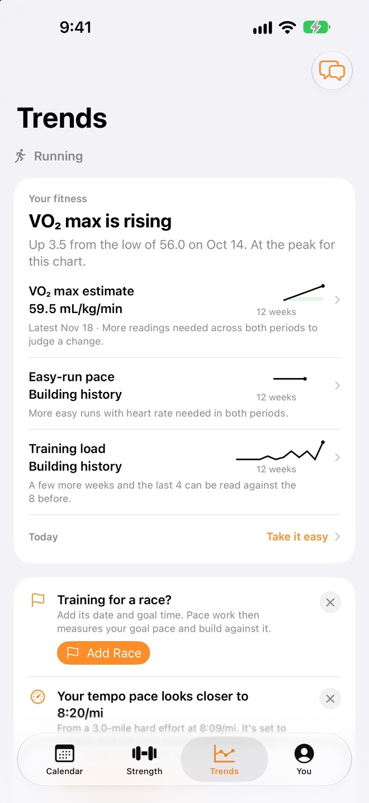
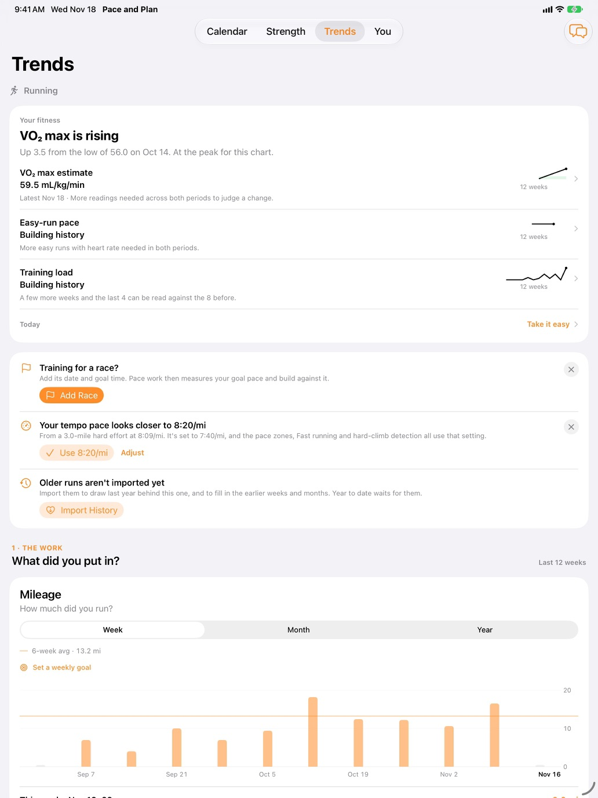

Plan the week.
Put runs, rides, lifts and rest days on one calendar. Paste a training plan, see completed workouts beside it and adjust the days ahead.
Bring your training plan, strength sessions and Apple Watch workouts together. See what you planned, what you did and what comes next.

For iPhone, iPad and Mac.


Put runs, rides, lifts and rest days on one calendar. Paste a training plan, see completed workouts beside it and adjust the days ahead.
Explore pace zones, training load and longer-term trends from the workouts Apple Health already records, with the numbers behind the readout.
Build reusable strength templates. Record sets, reps and weight, follow rest timers and keep track of what you did.
Keep your strength work beside your running. Start from a template or an empty workout, log the session as you go and save completed lifts to Apple Health.
Rest timers and a Live Activity keep the next set close, even when you leave the app.


See fitness estimates, easy-run pace, training load and mileage in Trends on iPhone and iPad. Open a measure to explore the numbers behind it.
View the full Trends screenPlan workouts and edit reusable strength templates on Mac, too.
Your plans, exercise library and strength templates sync through your own iCloud. Workout history, notes and saved conversations stay on the device where you use them.
No Pace and Plan account, ads or tracking. You choose Apple Health access and whether to enable Apple’s Private Cloud Compute for supported intelligence features.
Read the privacy policyApple Health analysis is available on iPhone and iPad. Apple Intelligence features require a compatible device and appropriate settings. iCloud is required for planning sync. Screenshots show sample training data.
Apple and the Apple logo are trademarks of Apple Inc. App Store is a service mark of Apple Inc.